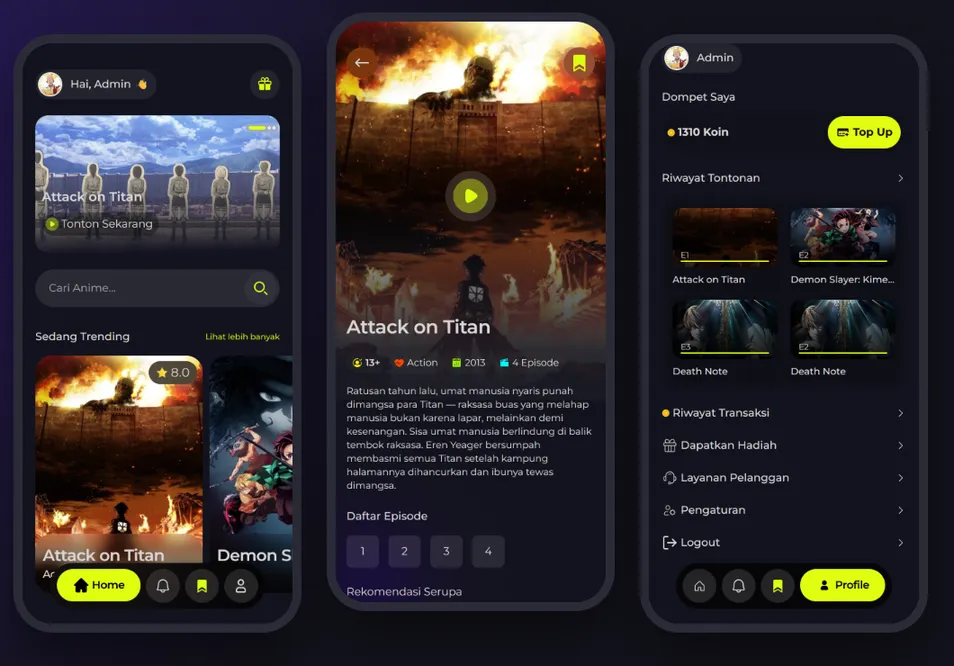

Anime Streaming Platform
Mobile-first streaming app where early episodes are free and later ones are unlocked with coins bought through Midtrans. Built with production hardening in mind.
- Premium videos on a private disk, streamed only after a per-request ownership check
- Race-safe coin wallet: DB transactions, row locks and unique constraints
- SHA-512 webhook signature check, rate limiting, HTML sanitizer against stored XSS
- 97 Pest feature tests; Filament 4 admin with revenue widgets
Laravel 12Filament 4MySQLMidtransTailwind 4Pest